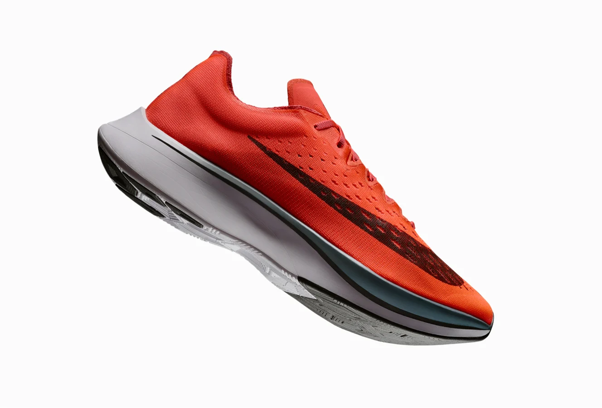
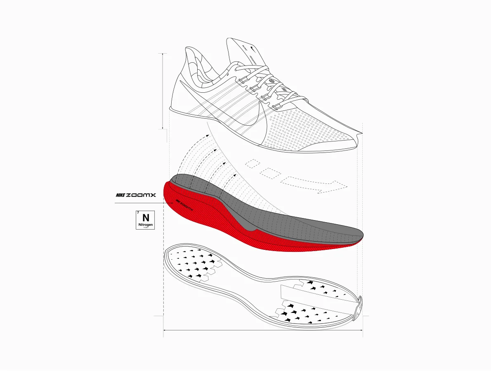
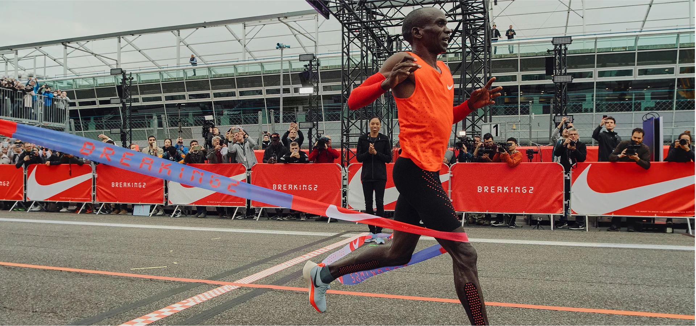

Nike ZoomX Foam
Lightweight Nike ZoomX foam cushioning uses cutting-edge engineering to give you the greatest possible energy return, turning the impact of your step into energy for your next stride.

What is Nike ZoomX Foam?
Nike ZoomX is lighter, softer and more responsive than any Nike foam, designed to maximize speed by delivering greater energy return. ZoomX was derived from a foam traditionally used in aerospace innovation, applied for the first time in performance footwear in the Nike Zoom Vaporfly Elite and 4%.
Lightweight Comfort
Nike ZoomX is lightest foam, giving you more cushioning without the weight.
Highest Energy Return
The Nike ZoomX midsole delivers 85% energy return, the greatest of any Nike foam, to give you a propulsive feeling as you move forward.
Nike ZoomX Origins
When we set out to the break the two-hour marathon barrier, we knew we needed a lightweight material with an extremely high energy return. We created Nike ZoomX foam—which gave us both—by combining insight from elite runners with countless hours of biomechanical analysis. The foam first appeared in the Nike Zoom VaporFly 4%, the shoe 2016 Olympic Gold Medalist Eliud Kipchoge raced in the 2:00:25 Breaking2 marathon.
After that historic race, Kipchoge told us he wanted Nike ZoomX foam in a training shoe. As he says it, "If you want to succeed on race day, you must build your belief, every day, in practice. I wanted to feel, in every run, some of the magic I get when I race in VaporFly, to help push during training, and remember why I am pushing so hard."